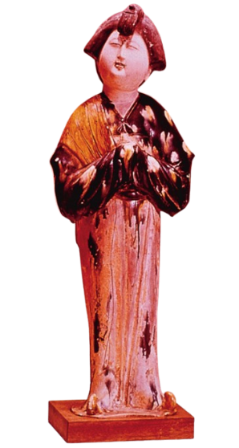
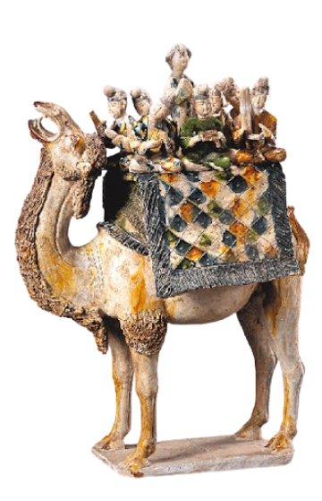
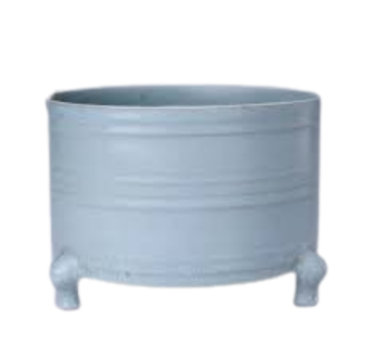
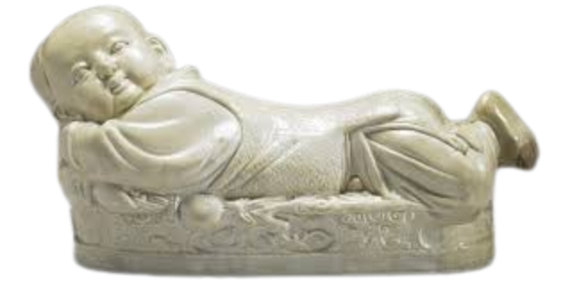
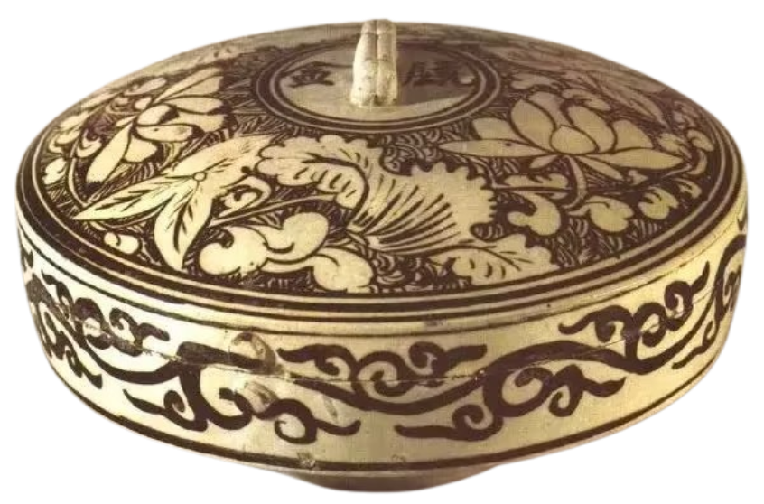
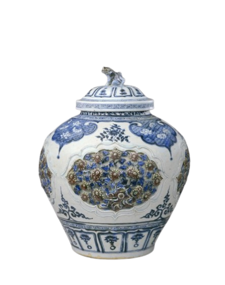
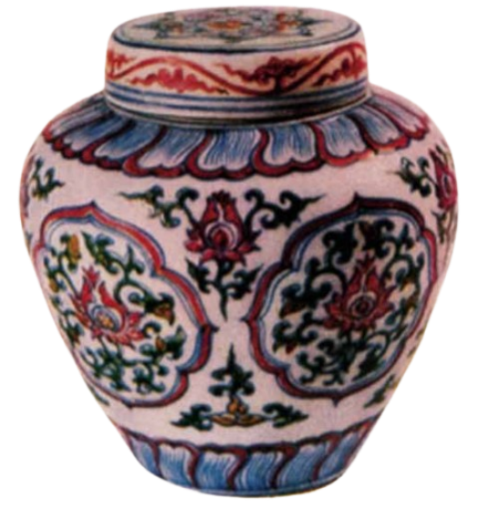
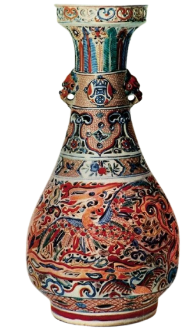
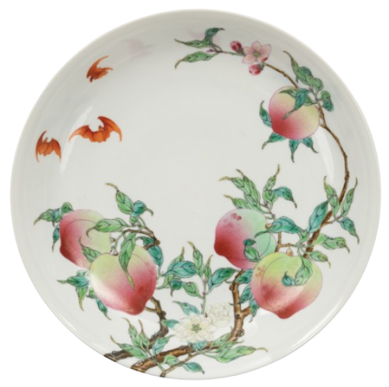
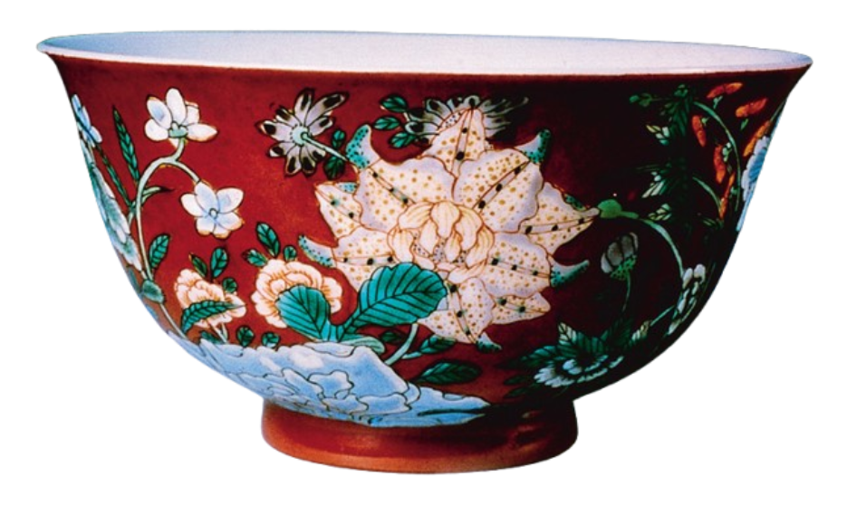

陶瓷
本頁整理唐代至清代陶瓷發展重點，配合圖像作簡潔學習。
學習目標
- 了解唐代至清代陶瓷工藝的發展。
- 認識中國陶瓷工藝的特色。
- 掌握彩瓷的發展過程。
導言
陶瓷其實是陶器和瓷器的總稱。
陶器是用黏土製成的器皿，胎質疏鬆粗糙，可在較低溫燒成。
瓷器以瓷土為原料，堅硬、細緻而潔白，須在高溫下燒成。
唐三彩
唐代出現色彩豐富的唐三彩陶器，常見綠、黃、白、藍、褐等釉色。
釉燒溫度約攝氏八百度，形成斑駁而活潑的表面效果。


單色瓷的發展
宋代瓷器以單色為主，釉色雅淡含蓄，氣質如文人。
元代雖仍偏向單色，但加入繪畫裝飾，風格更豐富。
宋、元名窯
窯是燒製瓷器的地方。宋代瓷窯分為官窯與民窯兩類。
官窯
由朝廷直接管轄，專門燒製皇室用品。
民窯
由民間主理，不受官方管制，多燒製日常用品。
景德鎮
景德鎮位於江西省，有「中國瓷都」之稱。
北宋中期曾燒製青白瓷；明清時期設御窯廠，專供宮廷瓷器。
宋、元瓷器圖像




明、清彩瓷
清初西方輸入陶瓷彩料，裝飾燒製更華麗、色彩更豐富，彩瓷工藝高度發展。




相關網頁
瓷器藏品 1：http://www.npm.gov.tw/dstore/db.htm
瓷器藏品 2：http://www.nga.gov/collection/gallery/eastcer/eastcer-main1.html
香港藝術館藏品：http://www.usd.gov.hk/hkma/chinese/collections/collection.htm
此章完
Ceramics
A clean learning page on ceramic development from the Tang to Qing dynasties.
Learning Objectives
- Understand the development of ceramic craft from Tang to Qing.
- Identify key characteristics of Chinese ceramics.
- Trace the evolution of polychrome porcelain.
Introduction
“Ceramics” is a general term covering both pottery and porcelain.
Pottery is made from clay with a looser, rougher body and is fired at lower temperatures.
Porcelain is made from porcelain stone/clay, harder and whiter, and requires high-temperature firing.
Tang Sancai
Tang Sancai (three-colour glazed ware) is known for rich glaze colours such as green, yellow, white, blue and brown.
Glazes were commonly fired at around 800°C, creating lively variegated surfaces.
Development of Monochrome Porcelain
Song wares are mostly monochrome, with elegant and restrained glaze tones.
Yuan ceramics remained largely monochrome but introduced painted decoration.
Famous Song and Yuan Kilns
Kilns are sites where ceramics are fired. Song kilns are commonly grouped into official and private kilns.
Official Kilns
Supervised by the court and producing wares for imperial use.
Private Kilns
Operated by common artisans, mainly making everyday wares.
Jingdezhen
Jingdezhen in Jiangxi is known as China’s “Porcelain Capital”.
It produced Qingbai porcelain in the Northern Song and hosted imperial kilns in the Ming and Qing periods.
Song and Yuan Works
Ming and Qing Polychrome Porcelain
Imported pigments in the early Qing enriched firing techniques, making decorative porcelain more brilliant and technically advanced.
Related Websites
Ceramic Collection 1: http://www.npm.gov.tw/dstore/db.htm
Ceramic Collection 2: http://www.nga.gov/collection/gallery/eastcer/eastcer-main1.html
Hong Kong Museum of Art: http://www.usd.gov.hk/hkma/chinese/collections/collection.htm